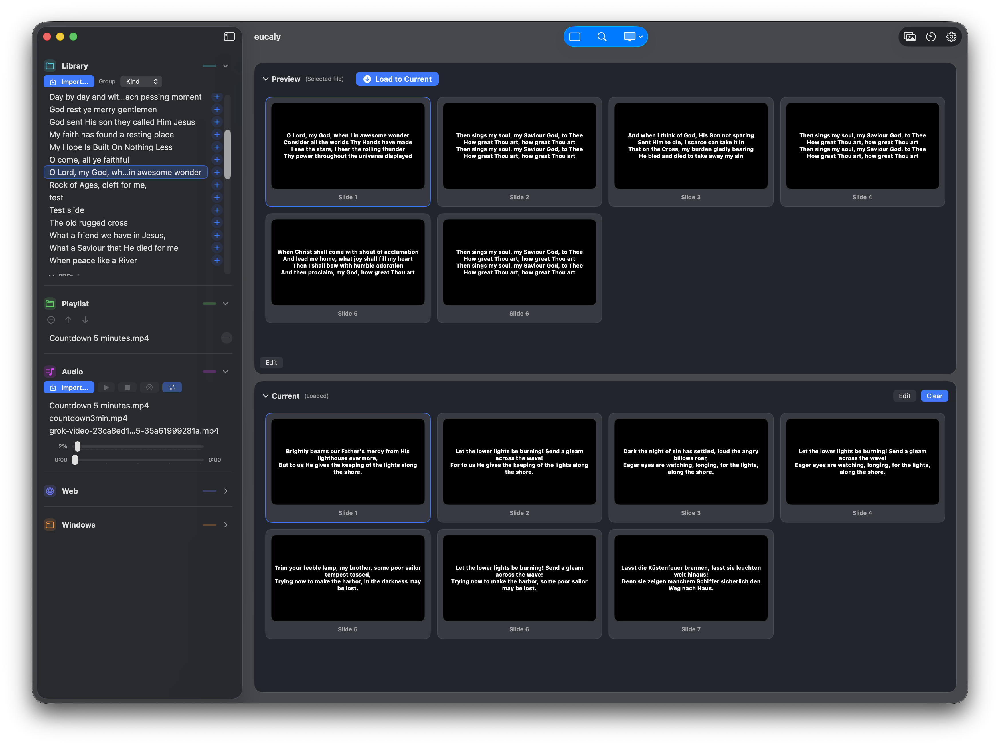

Lyrics
Create lyrics from File > New Lyrics or Command-N, then write plain text with a title, section headings, and verse lines.
macOS presentation app
Help for presenting lyrics, PDFs, images, videos, webpages, app windows, background audio, and timers from one reliable projection flow.

Use File > New Lyrics or Command-N to create a new lyrics file. Use File > Quick Open or Command-Shift-O to open the command palette and search the library without leaving the keyboard.
Create lyrics from File > New Lyrics or Command-N, then write plain text with a title, section headings, and verse lines.
PDFs, images, videos, webpages, and live app-window capture for flexible presentation sources.
Independent slide visibility, background visuals, background audio, and timer or clock overlays.
Import audio or video files into the library, choose a playable item from Audio, then control play, stop, loop, seek, and volume separately from slides.
Use the command palette to quickly search the library, open webpages, create lyrics, and jump to supported files without browsing folders manually.
Save lyrics as a plain text file. Section headings can be written with or without brackets, and blank lines separate blocks.
[Chorus], [ Chorus ], and Chorus: are accepted.Hook is treated as a chorus heading.Amazing Grace
Verse 1
Amazing grace! how sweet the sound,
That saved a wretch like me!
I once was lost, but now am found,
Was blind, but now I see.
[Verse 2]
'Twas grace that taught my heart to fear,
And grace my fears relieved;
How precious did that grace appear
The hour I first believed.eucaly is proprietary software. You may download and use official releases for personal, church, and other non-commercial presentation use. Redistribution, modification, resale, bundling, hosting, or commercial use requires written permission.